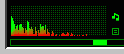
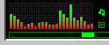
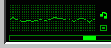
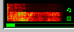
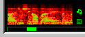

PM123 comes with a sound visualization plug-in, ANALYZER.DLL which is located in the visplug directory. The plug-in is visible right next to the volume bar. By default it shows the spectrum analyzer. Click it to switch between the different visualization styles.
    
Note that because the spectrum analyzer is visual plugin and it is skin specific and will not display on older PM123 skins. But you can add them easily to any skin by editing the skin's .SKN file and adding this to it:
1=visplug/analyzer.dll,x,y,size-x,size-y
Replace x, y, size-x and size-y with suitable coordinates (a easy way to find out the coordinates for a certain area is to load up PMView, take a Window capture of the skin and use the 'Track info' feature). The coordinates for the default skin are:
1=visplug/analyzer.dll,32,49,95,30
You can also use WinAmp-compatible viscolor.txt files like this:
1=visplug/analyzer.dll,x,y,size-x,size-y,viscolor.txt
The plug-in will then read viscolor.txt and adapt to colors specified in it! See Analyzer color configuration file for details about this file.